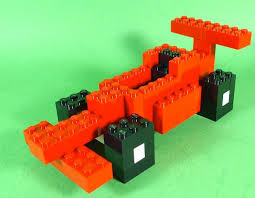
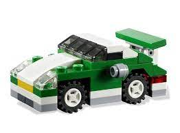
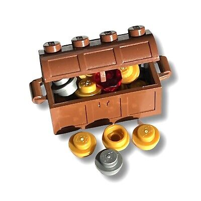
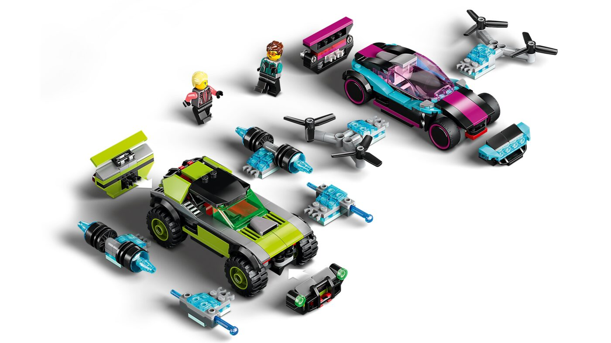

JavaScript is a key part of the website building process, just like HTML and CSS. It works like the Technic parts in a Lego set, while HTML is the bricks and CSS is all the fun colours. With just HTML you can build something that is shaped like a car, and CSS can make it actually have a windscreen and coloured bricks, but you need Javascript to make give the car a rocket booster and firing missiles. Or something.
A very basic car:

A slightly cooler looking car:

The coolest car you've ever seen:
So what does this mean practically? Well, Javascript acts the moving parts that add functionality and interactive features to a webpage and allows control over both input and output of data.
The order in which Javascript works is dictated by the control flow of the language. By default, like HTML Javascript works from top to bottom, line by line. However, there are several different operations which affect this linear flow.
One of the most common of these is loops. Loops work by, well, looping. They continuously repeat a process until they stop at a defined point within the code. They work similarly to how a turntable for records work, spinning nonstop until it reaches the set end of the record and stopping.
The DOM is the "tree" in which all of the code elements are located. This is a form of the most common visualisation:

Certain commands can be used to create "branches" across this tree, to access different areas of data. This can be done using say, arrays and objects. Let's return to our Lego analogy.
Objects are like little treasure chests filled with different pieces - information on each of which can be pulled depending on what specific piece you ask for - in the case of the image below you could be looking for how many gold or silver coins there are, or what colour the gem inside is. Each treasure chest would be named uniquely to make it easy to find. For example, you could be asking for the colour of the gem inside Captain Redbeard's Treasure, and the data you would receive would be Red.

Arrays on the other hand are like perfectly ordered collections of data, in a numerical order with counting starting at 0, and counting from there. In the below image, we would start with the droid on the left as 0, followed by 1, 2, 3, 4 and 5 (let's ignore old mate floating above the rest he just thinks he's sepcial) So if we wanted to access the third droid, Keith, we would ask the code to retrieve #3 from the "Droid Transport" array. Arrays are useful for retrieving information on a specific numbered piece of data in an ordered list.
Functions are modular actions which can be performed by JavaScript at any time. This is very useful because you can call upon functions for multiple different purposes, like the cars below, which have different parts which can be swapped out and used again, like rocket launchers! Again! Sick! Functions are very cool and definitely are key part of JavaScript.
